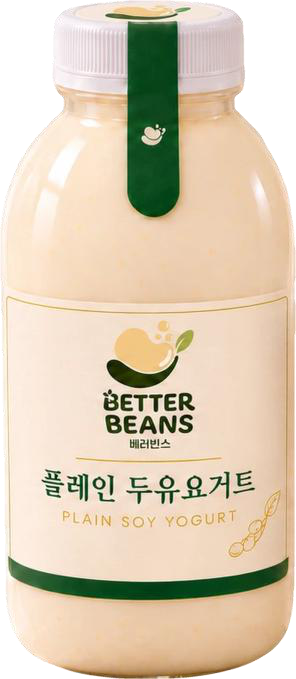

떠먹거나 마시거나

Plain Soy Yogurt
플레인 두유요거트
숟가락으로 떠먹어도, 컵에 따라 마셔도 좋은 농도입니다. 단맛과 향을 더하지 않아 과일이나 그래놀라, 스무디 어디에 넣어도 잘 어울립니다.
- 용량
- 500mL
- 가격
- 5,500원판매가 확인
- 형태
- 떠먹거나 마시는 형태
- 원재료명
- 두유(고형분 10% 이상, 대두-외국산(미국, 캐나다, 호주 등)), 유산균
- 영양성분
- 검사를 진행하고 있습니다. 결과가 나오면 이곳에 싣겠습니다.검사 결과 수령 후 기재